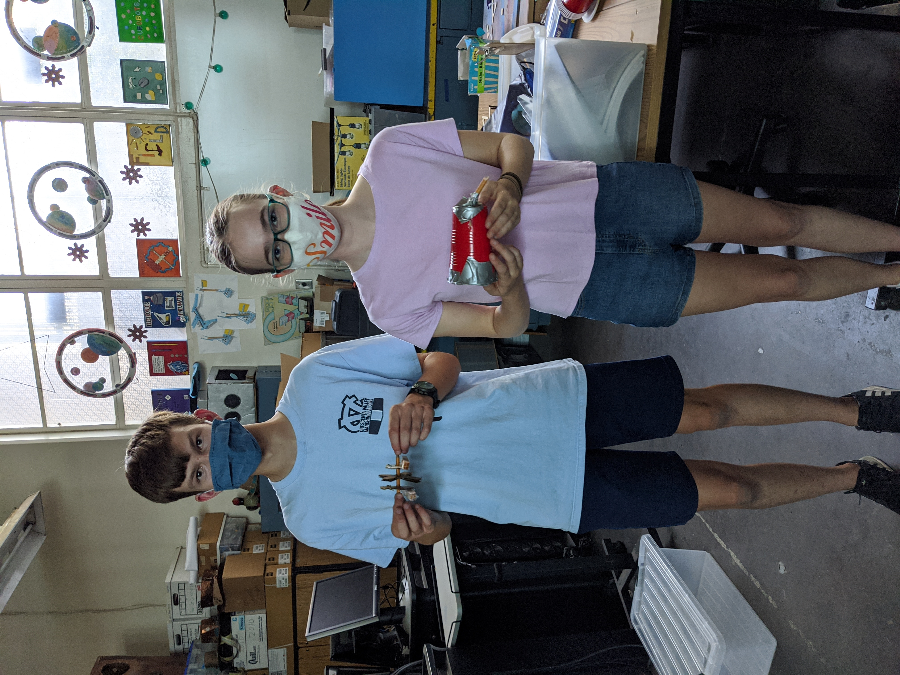
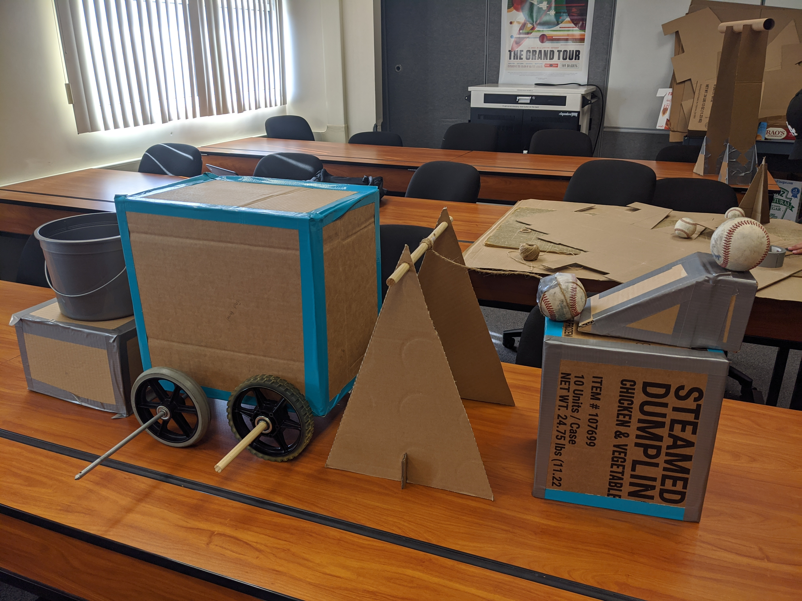
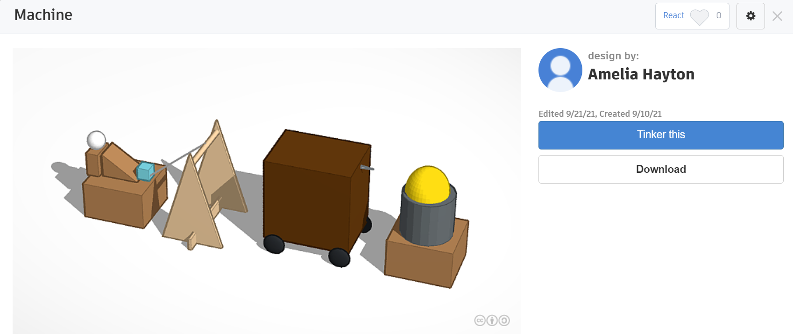

8/26/21 This week in class we started learning about the different robot games. We started with first robotics and ended with the JPL inventions challange. We designed differnt types of robots to comply with the different robot games. Over all I had fun this week.
9/9/21 This week was very fun. We learned about M-E and did fun activities alongside with it. On wednesday we did the wednesday challenge, which consisted of designing and building a rubber band boat. My boat went the farest distence, but had no rubber band to power it. I just blew on it. Overall this week was fun.

9/28/21 For my machine, I started of by drawing the design out on paper. Then after that I went onto tinkercad and cadded up the design. I made sure to do all the necsesary steps in order to get a good finished project. After that we started gathering up materials, and when we had all of our materials I started to construct my design. Eventually after a lot of boxes I finsihed building it. For our Thursday challanges we had to measure out wood to be exact. I used a method which included measuring at multiple points to get the best cut. When done with that, we went downstairs and used the table saw to cut the wood. Overally this was all very fun.
For this project we had to come up with and build a Rube Goldberg Contraction. We had to design and build it with simple supplies and it was for our mechanical engineering week. After drawing the concept we had to CAD it up on tinkercad, a free browser based cadding website, and get the dementions excatly how we wanted them. When we were done with that we built our contraptions.
 
10/20/21 This week and last week we learned about electrical engineering. We started of with a basic cercuit with an LED, a resistor, and a power source. Then we worked it up by adding multiple LEDs and resistors. Eventually we have buttons, LEDS, resistors, an ardino, and wires connecting to ground. We leaned how to wire everything correctly and how to connect all the pins on the arduino and the corresponding pin holes on the bread board. We also leaned how to make LEDS blink in a random order and how to turn them on and off using the arduino cooding locaion. I had very much fun learning how to code the blinking LEDS. Overally I had a lot of fun this week. Including when I blew up an LED and started a small fire :)).
10/27/21 This week we leant more about electrical engineering. We added to our bread boards. We added relays, an arduino and I hooked them both us to a little lego car. I also had fun and drove my car down the hallway a little bit connected to my laptop. We wired in some more LEDS and we also leant how to connect up the wire to the relay.
11/5/21 This week in class we leaned more about electrical engineering. We leaned how to use a soldering iron and how to make a circuit. We laened hwo to properly solder three wires, and LED, and a button. We started off my just soldering two wires together, then we got together the supplie that we needed and we started soldering the circuit. I had a red LED, black button, and red wires. Overall this week was really fun, because I love soldering.

11/12/21 This week in class, we worked on our design project. We did more reasearch and we all came up with what we wanted to design and build. My project is that I am going to be desgining a robotic arm that can be used on a mars rover. It will have multiple different grabing tools and it will have a motion sort of thing that will make it move in an easier way and help it move more like a human hand. This week we also did two different Wednesday Challanges. For the first one we had to decide if we wanted to write out if we wanted to writ the numbers 1 to 1,000,000 or take a normal year long math class. At first I chose the 1,000,000 but near the end, I decided to go with the math class because it would actually take a much shorter amount of time to do then the writing the numbers. The second one that we did was that we had to make a bridge of post-it notes. We had to make the longest bridge possible, without using any other materials to help us. I chose to go from a table to another table, and i won that challenge by briding the furthest.
11/19/21 This week in class, we started working on our spaghetti bridge final. The requirements for theis project were to use civil engineering to come up with a stable design that would help hold up a bucket of water the best. The restraints that we had were to only use 20 pieces of spaghetti, and the bridge has to be 2 feet long in length. We also have to come up with a CAD of our spaghetti bridge project. So far our design consists of a lot of little pieces of spaghetti broken up into small sections and glued together in a specific patern to gain the most stabillity. We are going to use lots of little pieces to make a stable structure for the bridge, if we have enough spaghetti sticks. At the beginning of the week we also worked a little more on our design projects. I finished with the about it section and am almost done with the reasearch part of the project proposal. I still need to come up with a list of parts that I need, the desgin constraints and the biography about myself. The people that I am working with on the spaghetti bridge project are Wesli and Colin.